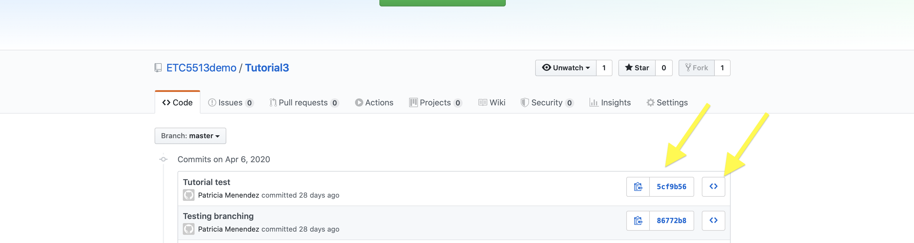
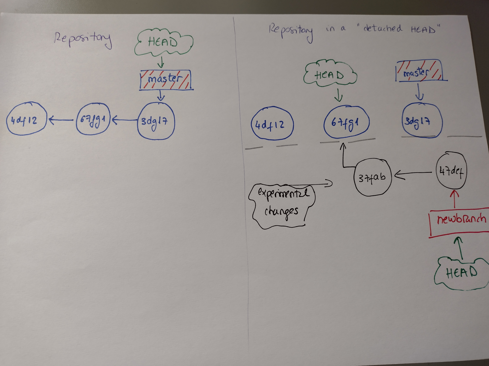

ETC5513: Reproducible and Collaborative Practices
Workflows for reproducible data analysis
Lecturer: Michael Lydeamore
Department of Econometrics and Business Statistics
Open Frame

Recap
- Learn about
git rebase - Learn about
git fetchandgit merge - Learn about staging and unstaging files
- Learn how to undo some changes
Today’s plan
Aim
- Start learning about LaTeX
- LaTeX integration in qmd files
- Deeper understand about commits and SHA1 numbers
- Visualize commits
- Compare commits
- Moving back to different commits and create branches starting from past commits.
- Stage and unstage files
- Revert to a previous commits
- Removing files using git
- Changing branch names
- Clone all the branches from a repository
LaTeX

LaTeX template

LaTeX template
\begin{document}
% Packages to be used
1\usepackage{amsmath}
2% Creating title
\title{This is an example}
\author{ETC5513, Monash University}- 1
- List all the packages
- 2
- % = comments
LaTeX template
- 1
- Open the document
- 2
- Sections each get a ‘section’ header
- 3
- Close the document at the end.
We are going to use LaTeX via Quarto files
In order to be able to use LaTeX within our Quarto documents, we need to install tinytex:
or
You don’t need the full LaTex installation for this unit, just this package.
Integrate a LaTeX template into a quarto file
There are different ways: - If the file features are not too complicated. We can simply add some of the necessary LaTeX packages into our YAML preamble. You will be working with this example in the tutorial:
title: "Reproducible and Collaborative Practices"
subtitle: "Tutorial 7"
author: "Your Name"
institute: "Department of Econometrics and Business Statistics"
output:
pdf:
toc: true
toc_depth: 2
number_sections: true
highlight: tango
header-includes:
- \usepackage{titling}
- \pretitle{\begin{center} \includegraphics[width=5in,height=13in]{figs/front.jpg}\LARGE\\}
- \posttitle{\end{center}}
- \usepackage{fontawesome}
- \usepackage[most]{tcolorbox}
- \usepackage{xcolor}
- \usepackage{sectsty}
- \sectionfont{\color{olive}}
- \usepackage{verbatim}Integrate a LaTeX template into a quarto file
There are different ways: - Another possibility is to use a preamble.tex - And incorporate that into our Quarto file (we will look into this in Week 8):

Reference
LaTeX in 24 Hours A Practical Guide for Scientific Writing

Closer look at our repos
Commits, hash values and SHA numbers
git log allows us to go back into our project history and see all the commits done in a repo. We can also see the commits of other contributors, we can browse the history to find out past issues or problems.
commit 8cfaee1e447d8e83d745b51ffcd310465afb76b1
Author: Patricia Menendez <patricia.menendez@monash.edu>
Date: Sat Apr 4 15:49:54 2023 +1000
Uploading Week4 slidesCommits, hash values and SHA numbers
The Hash or SHA-1 value (often called refs) is created when we generate a commit. They are a 40 character string stored in hexadecimal. They are effectively unique identifiers for a commit.
There are so many different hashes that you can get away with just using the first few to identify your SHA.
Inspect the SHA numbers
Using your terminal you can inspect your commits and SHA numbers by typing git log in your command line interface:
Tip
- To exit the screen press q
- To go up in the history, press u
- To go down in the history, press d or space.
Inspect the SHA numbers
You can also inspect them from GitHub
git log
git logis the Git command that allow us to explore the commits history in a Git repository.git loglists the commits made in that repository in reverse chronological order. That is, the most recent commits show up first.git loghas a great variety of options that allow us to explore commits depending on our preference.
git log
git log --oneline condenses each commit to a single line
3a5bc86 W3 cli updates
4d1b022 W3 shell updategit log -n 3: show last 3 commitsgit log --since=01-01-2020: Show commits since…git log --until=01-01-2020: Show commits until…git log --author="Michael Lydeamore": Show commits by a single author.
git log and git show
git log -p: shows the difference in each commit. You can chain flags, sogit log -p -n 2will limit to the most recent 2 commitsgit log index.qmdwill show you all commits on a particular filegit log --oneline -p index.qmd: Shows you all the changes done in the different commits to this file, and their changesgit showwill show various information about the repo.
More options associated with git log
git log --statto see some (abbreivated) stats, like which files were modified, how many files, and how many lines were added or removedgit log --pretty=onelineprints each commit on one linegit log --pretty=format: "%h -%an : %s": Display each commit in one line and display how long ago it wasgit log --pretty=format:"%h %s" --graph: Will also show the tree
For more info on git log, please look here.
Remember that if you want to visualize the tree of the repository: VSCode is a great tool for that.
git log and git diff
git log displays revisions, and git diff displays the difference between two revisions in the repo.
It also shows snippets of the text around the part of the file that has changed so you know in which part of the file the changes are happening.
git diff --color-words will display words that have changed in a different color.
Changes within the files in the staging area
git diff --staged
git diff options
git diff commit1 commit2: Compare changes between any two commitsgit diff branch1 branch2: Compare across branches (!)
git diff master newbranch ./index.qmd: Compare the fileindex.qmd, between the master and newbranch.
git diff HEAD~2 HEAD --name-only: Shows the files that have changed between the latest commit and the two before that.
Visiting past commits

Let’s explore a given commit
In order to look at the status of the files in a given commit, we can use git checkout SHA for example:
git checkout 47ef21kOnce you run this command you will get the
“You are in a detached HEAD state”
Note: You get to the detached HEAD state by checking a commit directly. Remember the HEAD is a pointer that keeps track of your location within the Git repo.
If we want to see all the commits here we need to use git log --oneline --all.
Detached HEAD repo view
Detached HEAD
Detached HEAD state gives you the power to check out any commit and explore the older state of a repository without having to create a local branch. In addition, it also allows you to change the repository.
Warning
Any commits made in a detached HEAD state will be lost when you check out any branch.
Solution
Create a branch to keep your commits
If you want to leave the detached HEAD and return to another branch you can simply use git checkout branchname
Go back into the repository
git checkout 8cfaee1e447d8e8
You are in ‘detached HEAD’ state (the changes made in this state do not belong to any branch!). That allows you to explore the files that are at that particular location of the repo history.
Tip
No-one wants to be a detached HEAD state. Even git repos.
- If you want to bring some files from the past history to your current head, it is best to do this on a new branch
git branch new_branchgit checkout new_branch- or
git checkout -b new_branch
- Continue working on this branch, then merge
Detached HEAD repo view
Git environment tree

Stage and unstage files
Before you push changes into the remote repo:
git reset filename: Unstage a single filegit reset: Unstage all staged files
For example:
git add filenamegit status: filename is added to the staging areagit reset filename: filename will be removed from the staging area.
Intuition: You can think of git reset as the opposite of git add.
Commits
Commits
- Commits need to be clear and concise.
- Commits need to be meaningful so that someone else can understand what you changed in a commit.
- Commit early, commit often, but commit meaningfully
Updating file 1: ❌ Not meaningful!
Adding gmax for computing maximum value: ✅
Please watch this video minute 3:16 and consider this when creating your commits! video
Edit/Amend most recent commit (using cli)
This only works for your most recent commit if it has not been pushed to the remote repo!
Maybe you forgot to add a file or you commit the wrong file. Then you can amend your last commit. That also includes the commit message (if you need to change it).
You can amend the commit directly using the command line interface/console
If you need to add a new file then you can use
git add fileand then use:
git commit --amend -m "your updated commit message"Edit/Amend previous commit (using VS code)
This only works for your most recent commit if it has not been pushed!
git commit --amend will open the VSCode editor. This is a convenient way to modify the most recent commit.
Workflow:
- Modify whatever files you need to change
git commit --amend- Close editor, and all should be fixed.

Amending commits
Amending a commit that you’ve already pushed to a remote repo is BAD practice and should be avoided
- Amending commits which are already pushed to a remote are more difficult to apply and would require a force push for the rewrite.
- Also it will require rebase.

Reverting commits that have been pushed to a remote repo
git revert: The git revert command can be considered an ‘undo’ type command, however, it is not a traditional undo operation.
Instead of removing the commit from the project history, it figures out how to invert the changes introduced by the commit and appends a new commit with the resulting inverse content. This prevents Git from losing history, which is important for the integrity of your revision history and for reliable collaboration.
You can think of it as a “rollback”: it points your local environment back to a previous commit. Your “local environment,” refers to your local repository, staging area, and working directory.
git revert: When commits have been pushed
This can be useful, if you need to fix a bug in your code that was introduced by a single commit.
It will record a new commit with the changes introduced by reverting the last commit. If you don’t want to include the commits reverted then you could use
git revert --no-commit.To revert the previous commit
git revert HEAD
git revert: When commits have been pushed
Note that here we are not using
HEAD~1as with reset.The reason is that when using thegit resetcommand we are setting a new HEAD position while withgit revertwe are actually reverting the commit specified.Then you will have to commit the changes again for the files to be reverted and for the commit to be undone.
When using the
git revertcommand, Git will automatically open your text editor (VS code) in order to commit the changes.
Removing files
- If the files are untracked you can just remove them
- If the files are tracked. You can use git to remove the files
git rmfile.txtgit status(file already added into the staging area)git commit -m“Delete file.txt”git push originmaster
Mirroring a repository
Mirroring is to replicate the state of a remote or upstream repository in our local machine. By state, we mean all the branches and all the tags as well.
--mirror:
Set up a mirror of the source repository. This implies --bare. Compared to --bare,
--mirror not only maps local branches of the source to local branches of the target,
it maps all refs (including remote-tracking branches, notes etc.) and sets up a
refspec configuration such that all these refs are overwritten by a git remote
update in the target repository.Example of git mirror
mkdir Example(Don’t forget to create a folder)cd Example(And navigate into that folder before the next steps!)git clone --mirror https://github.com/ETC5513/GitKraken-example.git .gitgit config --unset core.baregit reset --hard
Commits
- So far we are only writing the commit subject line.
- Concise and informative
- Be descriptive and specific about what changed.
- Next week we will learn to add more info into the commits (commit body).
- Active tense and make sure they are informative so that if you need to find something in your history you can do that!
Week 7 Lesson
Important
- Start learning about Latex
- Latex integration in Rmd files
- Deeper understand about commits and SHA1 numbers
- Visualize commits
- Compare commits
- Moving back to different commits and create branches starting from past commits.
- Stage and unstage files
- Revert to a previous commits
- Removing files using git
- Clone all the branches from a repository

ETC5513 Week 7